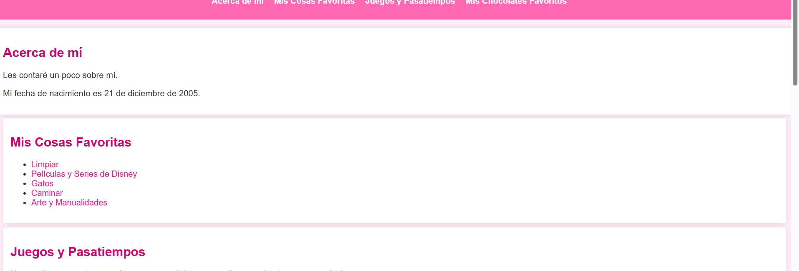

Hace que la primera línea de los párrafos sea negrita y Agrega un ícono de brillitos después de cada h2
Le da estilo a mi página web. Uso una fuente fácil de leer, que es Arial, y el fondo es de un color rosa claro. Las secciones tienen un fondo blanco, un poco de espacio interno y esquinas redondeadas. Cuando paso el mouse sobre ellas, se agrandan un poco. Los títulos son de un rosa oscuro y los enlaces son de un rosa fuerte sin subrayado, lo que los hace ver limpios.
le da estilo a la barra de navegación de mi página, que tiene un fondo rosa y enlaces blancos que cambian a rosa claro al pasar el mouse. En la sección de comida, el encabezado es marrón con texto claro, y tengo un contenedor blanco con sombra y esquinas redondeadas. Las imágenes son anchas, pero no más de 400 píxeles, y también tienen esquinas redondeadas.
cambia el color de los enlaces en mi página. Los enlaces que comienzan con "https:" son de color azul, y los que se abren en una nueva pestaña son de color naranja.
le da estilo al encabezado y al pie de mi página, ambos con un fondo rosa claro y texto centrado, además de un poco de espacio interno. El contenido principal también tiene un poco de espacio alrededor.
Cambia el color de los párrafos que siguen a un h2
Cambia el fondo de los botones deshabilitados
Hace que la primera línea de los párrafos sea negrita y Agrega un ícono de brillitos después de cada h2